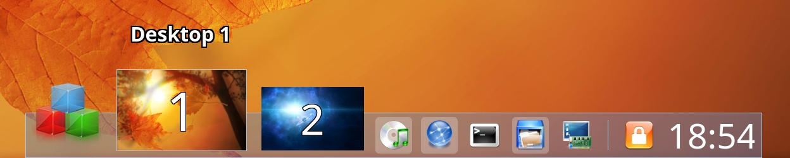

Crystal Dock - A cool dock (desktop panel) for Linux desktop

Crystal Dock is a cool dock (desktop panel) with parabolic zooming effect for Linux desktop, with the focus on smooth zooming effect and being simple and easy to use.
Main features:
- Smooth parabolic zooming effect
- Supported components: Application Menu, Pager, combined Launchers/Tasks, Clock
- Multiple docks support
- Integration with major desktop environments (KDE Plasma, GNOME, XFCE, MATE, Cinnamon, LXQT):
- Special menu entries (e.g. Log Out)
- Specific default launchers
- Setting wallpapers
- Support for separate wallpapers for separate virtual desktops
- Separate configs for separate desktop environments
Crystal Dock is written in C++ and depends on:
- Qt5 as the GUI framework
- KWindowSystem as a high-level API to access the window system
For more details:
- Download: For latest releases, please visit Releases page.
- Documentation: Please visit Documentation
- Screenshots: Please visit Screenshots
- Bugs/feature requests: Please visit Issues page. Please check if the issue has already been filed before creating a new one.
- Source code: The source code is hosted at GitHub
- Licence: Crystal Dock is free, open-source software released under GPLv3 licence
- FAQs: Please visit FAQs
- About the author: Please visit About the author
A good icon theme to use with Crystal Dock is the Crystal Remix icon theme.